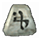
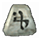

Armaduras
Zarza
 Ral •
Ral •
 Ohm •
Ohm •
 Sur •
Eth
Sur •
Eth
Req level: 61
Armaduras de 4 socket
- Nivel 20 del aura Espinas cuando estás equipado
- +50% Recuperación de impacto más rápida
- +31% para Daño de habilidad de veneno
- +14% Defensa perfeccionada
- +300 Defensa
- Aumenta el maná máximo 5%
- Regenerar maná 15%
- +5% a la resistencia mínima al fuego
- Resistencia al fuego +30%
- Resistencia al veneno +100%
- +13 Vida después de cada muerte
- Nivel 13 Espíritu de púas (33/33 cargas)
- Engarzado (4)

Cadenas de Honor
 Dol •
Dol •
 Um •
Um •
 Ber •
Ber •
 Ist
Ist
Req level: 63
Armaduras de 4 socket
- +2 a todas las habilidades
- +200% Daño a los demonios
- +100% Daño a los muertos vivientes
- 8% Vida robada por impacto
- +84% Defensa perfeccionada
- +20 de fuerza
- Repostar vida +7
- Todas las Resistencias 65
- Daño reducido en 8%
- 25% más posibilidades de conseguir un objeto mágico
- Engarzado (4)
Coacción
 Shael •
Um •
Shael •
Um •
 Thul
Thul
Req level: 47
Aramaduras de 3 socket
- +40% Recuperación de impacto más rápida
- +11% Daño mejorado
- Añade 37-133 de daño de frío
- 15% Posibilidad de golpe triturador
- 33% Posibilidad de heridas abiertas
- +106% Defensa perfeccionada
- -20% Drenaje de resistencia más lento
- Resistencia al frío +45%
- Resistencia a los rayos +15%
- Resistencia al fuego +15%
- Resistencia al veneno +15%
- Engarzado (4)
Corazón de León
 Hel •
Hel •
 Lum •

Fal
Lum •

Fal
Req level: 41
Armadura de 3 socket
- +20% Daño mejorado
- +25 de fuerza
- +15 de destreza
- +20 de vitalidad
- +10 de energía
- +50 de vida
- Todas las Resistencias 30
- Requisitos -15%
- Engarzado (3)
Enigma
 Jah •
Jah •
 Ith •
Ber
Ith •
Ber
Req level: 65
Armadura de 3 socket
- +2 a todas las habilidades
- +45% Correr/Andar más rápido
- +1 para Teletransportador
- +708 Defensa
- +74 de fuerza muerto viviente
- Aumenta la vida máxima 5%
- Daño reducido en 8%
- +14 Vida después de cada muerte
- 15% El daño infligido repercute en el maná
- 99% más posibilidades de conseguir un objeto mágico muerto viviente
- Engarzado (3)
Fortaleza
 El •
Sol •
El •
Sol •
 Dol •
Dol •
 Lo
Lo
Req level: 61
Armas y Armaduras de 4 socket
- 20% de posibilidades de lanzar el nivel 15 Armadura glacial al recibir un azote
- +25% Velocidad de lanzamiento mayor
- +214% Defensa perfeccionada
- +15 Defensa
- +99 de vida muerto viviente
- Repostar vida +7
- +5% a la resistencia máxima a los relámpagos
- Todas las Resistencias +28
- Daño reducido en 7
- 12% El daño infligido repercute en el maná
- +1 al Radio de luz
- Engarzado (4)
Hueso
Sol •
Um •
Um
Um •
Um
Req level: 47
Armadura de 3 socket
- 15% de posibilidades de lanzar el nivel 10 Armadura de hueso al recibir un azote
- 15% de posibilidades de lanzar el nivel 10 Lanza ósea al azotar
- +2 a los niveles de habilidad del nigromante
- +157 de maná
- Todas las Resistencias 30
- Daño reducido en 7
- Engarzado (3)
Humo
 Nef •
Lum
Nef •
Lum
Req level: 37
Armaduras de 2 socket
- +20% Recuperación de impacto más rápida
- +75% Defensa perfeccionada
- +280 Defensa contra Misil
- +10 de energía
- Todas las Resistencias 50
- -1 al Radio de luz
- Nivel 6 Debilitante (18/18 cargas)
- Engarzado (2)
Ilustración
 pul •
pul •
 Ral •
Sol
Ral •
Sol
Req level: 45
armaduras de 2 socket
- 5% de posibilidades de lanzar el nivel 15 Llamarada al recibir un azote
- 5% de posibilidades de lanzar el nivel 15 Bola de fuego al azotar
- +2 a los niveles de habilidad de la hechicera
- +1 para Calor
- +30% Defensa perfeccionada
- Resistencia al fuego +30%
- Daño reducido en 7
- Engarzado (3)
Lluvia
 Ort •
Ort •
 Mal •
Ith
Mal •
Ith
Req level: 49
Armaduras de 3 socket
- 5% de posibilidades de lanzar el nivel 15 Armadura de ciclón al recibir un azote
- 5% de posibilidades de lanzar el nivel 15 Torbellino al azotar
- +2 para habilidades druidas
- +135 de maná
- Resistencia a los rayos +30%
- Daño de magia reducido en 7
- 15% El daño infligido repercute en el maná
- Engarzado (3)
Melancolía
Fal •
Um •
 Pul
Pul
Um •
Pul
Req level: 47
Armaduras de 3 socket
- 15% de posibilidades de lanzar el nivel 3 Visión borrosa al recibir un azote
- +10% Recuperación de impacto más rápida
- +208% Defensa perfeccionada
- +10 de fuerza
- Todas las Resistencias 45
- Mitad de duración del congelamiento
- 5% El daño infligido repercute en el maná
- -3 al Radio de luz
- Engarzado (3)
Mito
Hel •
 Amn •
Nef
Amn •
Nef
Req level: 25
Armaduras de 3 socket
- 5% de posibilidades de lanzar el nivel 1 Aullido al recibir un azote
- 10% de posibilidades de lanzar el nivel 1 Burla al azotar
- +2 a los niveles de habilidad del bárbaro
- +30 Defensa contra Misil
- Repostar vida +16
- El atacante recibe el daño de 14
- Requisitos -15%
- Engarzado (3)
Paz
 Sha •
Thul •
Amn
Sha •
Thul •
Amn
Req level: 29
Armaduras de 3 socket
- 4% de posibilidades de lanzar el nivel 5 Misiles lentos al recibir un azote
- 2% de posibilidades de lanzar el nivel 15 valquiria al azotar
- +2 a los niveles de habilidad de la amazona
- +20% Recuperación de impacto más rápida
- +2 para Azote crítico
- Resistencia al frío +30%
- El atacante recibe el daño de 14
- Engarzado (4)
Pilar de fe
Jah •
Ohm •
Ber •
 Cham
Cham
Req level: 67
Armaduras de 4 socket
- +2 a todas las habilidades
- +25% Recuperación de impacto más rápida
- +20.5% Daño mejorado
- +104% Daño a los demonios
- +159% Defensa perfeccionada
- Aumenta la vida máxima 5%
- +99 de vida muerto viviente
- +5% a la resistencia mínima al fuego
- Todas las Resistencias 40
- Daño reducido en 8%
- No puede congelarse
- Engarzado (4)
Principio
Ral •
 Gul •
Gul •
 Eld
Eld
Req level: 53
Armaduras de 3 socket
- 100% de posibilidades de lanzar el nivel 5 Rayo sagrado al azotar
- +2 a los niveles de habilidad del paladín
- +50% Daño a los muertos vivientes
- +100 de vida
- 15% Drenaje de resistencia más lento
- +5% a la resistencia máxima al veneno
- Resistencia al fuego +30%
- Engarzado (3)
Prudencia
Mal •
Tir
Req level: 49
Armaduras de 2 socket
- +25% Recuperación de impacto más rápida
- +141% Defensa perfeccionada
- Todas las Resistencias 33
- Daño reducido en 3
- Daño de magia reducido en 17
- +2 al maná tras cada muerte
- +1 al Radio de luz
- Repara 1 de durabilidad en 4 segundos
- Engarzado (2)
Roca
Shael •
Um •
Pul •
Lum
Req level: 61
Armaduras de 4 socket
- +60% Recuperación de impacto más rápida
- +250% Defensa perfeccionada
- +300 Defensa contra Misil
- +10 de fuerza
- +10 de vitalidad
- +10 de energía
- Todas las Resistencias 15
- Nivel 16 Roca líquida (80/80 cargas)
- Nivel 16 Gólem de arcilla (16/16 cargas)
- Engarzado (4)
Riqueza
 Lem •
Lem •
 Ko •
Tir
Ko •
Tir
Req level: 43
Armaduras de 3 socket
- +10 de destreza
- +2 al maná tras cada muerte
- 300% oro extra de los monstruos
- 100% más posibilidades de conseguir un objeto mágico
- Engarzado (3)
Sigilo
 Tal •
Eth
Tal •
Eth
Req level: 25
Armaduras de 2 socket
- +25% Correr/Andar más rápido
- +25% Velocidad de lanzamiento mayor
- +25% Recuperación de impacto más rápida
- +6 de destreza
- Regenerar maná 15%
- +15 Resistencia máxima
- Resistencia al veneno +30%
- Daño de magia reducido en 3
- Engarzado (2)
Tiempo
Lem •
Fal •
Um •
Lo
Req level: 61
armaduras de 4 socket
- +1 a todas las habilidades
- +15% Velocidad de lanzamiento mayor
- +1 para Teletransportador
- +65% Defensa perfeccionada
- +10 de fuerza
- Aumenta el maná máximo 9%
- +5% a la resistencia máxima a los relámpagos
- Todas las Resistencias 25
- 50% oro extra de los monstruos
- 20% más posibilidades de conseguir un objeto mágico
- Engarzado (4)
Traición
Shael •
Thul •
Lem
Req level: 43
Armaduras de 4 socket
- 5% de posibilidades de lanzar el nivel 15 Fundido al recibir un azote
- 25% de posibilidades de lanzar el nivel 15 Veneno al azotar
- +2 para habilidades asesinas
- +45% Velocidad de ataque aumentada
- +20% Recuperación de impacto más rápida
- Resistencia al frío +30%
- 50% oro extra de los monstruos
- Engarzado (3)